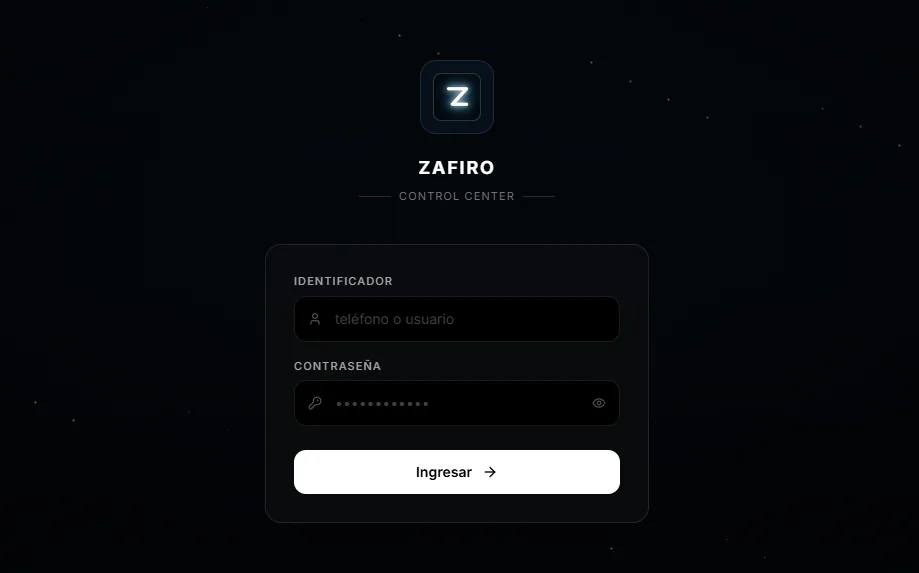
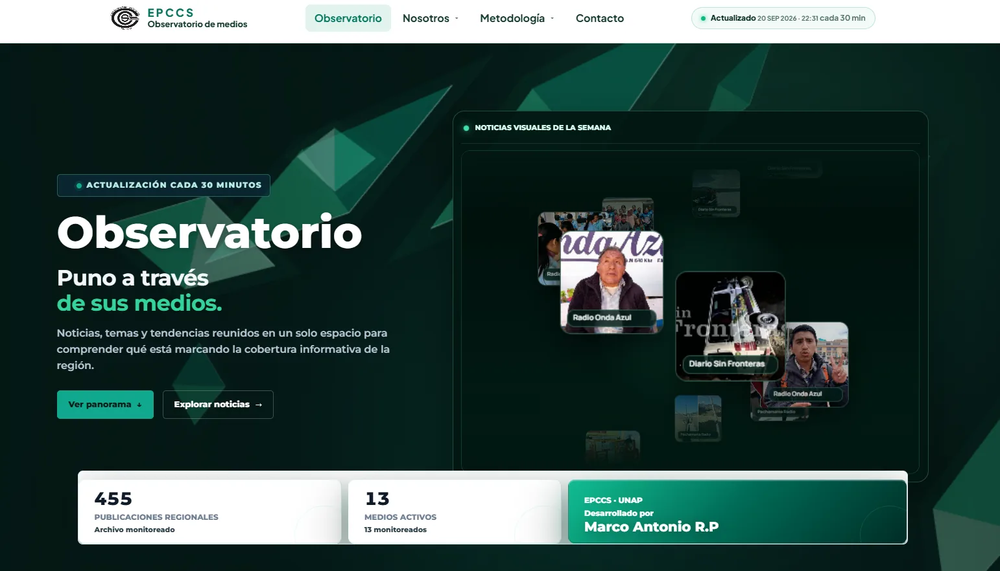
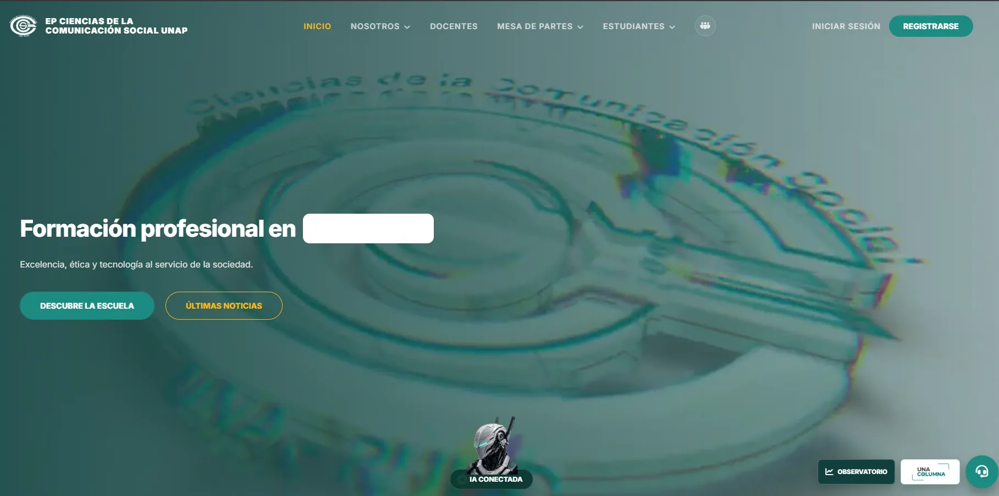
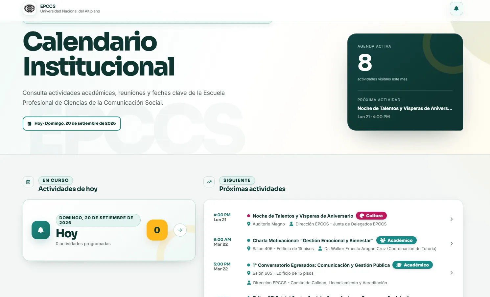
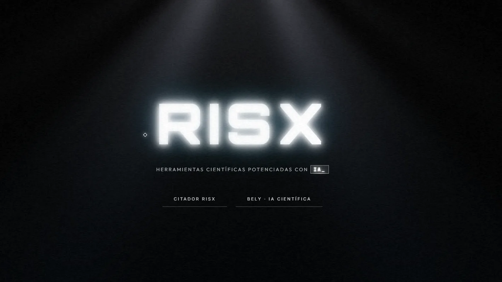

Sistemas IA en Producción
Soluciones inteligentes diseñadas para resolver problemas reales en el ámbito académico, la gestión de agendas y la creación automatizada de medios. Haz clic en cada tarjeta para ver la arquitectura técnica.

ZAFIRO IA — Zafiro Agent
Gemini API • Whisper • WhatsApp • Cloud
Centro de control autenticado para un asistente de IA con WhatsApp, voz, agenda y automatizaciones multi-cloud.
Abrir Zafiro Control Center
Observatorio de Medios Digitales
Región Puno y Juliaca • IA Periodística • NLP
Observatorio regional con actualización periódica, 455 publicaciones, 13 medios activos y análisis automatizado de noticias.
Abrir Observatorio de Medios
ARUSA — IA Institucional
EPCCS • Universidad Nacional del Altiplano
Portal institucional de la EPCCS con una capa de IA conectada para consultas, orientación y acceso a información universitaria.
Abrir portal EPCCS y ARUSA
Calendarios Institucionales Web
Vercel • Supabase • Gestión de Roles
Dos calendarios cloud: agenda académica de la EPCCS y gestión institucional autenticada para el Colegio de Contadores.

RISX — Herramientas Científicas
Citador RISX • BELY • Investigación
Suite científica con Citador RISX y BELY para apoyar investigación, consulta bibliográfica y producción académica.
Producción Audiovisual & Pipelines
DaVinci Resolve Studio • Contenido Institucional • IA
Diseño de identidad visual, piezas institucionales, animación de logos, spots y flujos de automatización para transcripciones, subtitulado y análisis digital.